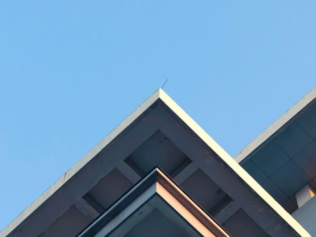
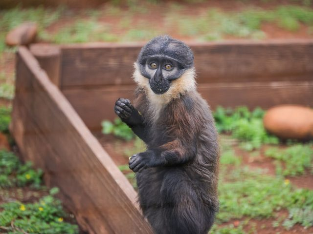

VOCABULARY · WORD UP 單字複習 UNIT 31
M-III．M 開頭（三）
WORD UP「M-III」的 37 個字（missing 到 must）。紅色＝要複習，藍色標籤＝WORD UP 標熟記、還要在這裡考對。
共 37 個單字．點 🔊 聽發音
1missingadj.
失蹤的；遺失的
My cat has been missing for two days.我的貓失蹤兩天了。
2mistaken.
錯誤
make a mistake 犯錯
Everyone makes mistakes.每個人都會犯錯。
3mixv.
混合
mix A with B
Mix the flour with milk.把麵粉和牛奶混在一起。

4modeln.
模型；模特兒；榜樣
role model 榜樣
My brother likes building model cars.我哥哥喜歡組裝模型車。

5modernadj.
現代的
Taipei is a modern city.台北是現代化的城市。
6momentn.
片刻；時刻
at the moment 此刻
Wait a moment, please.請稍等一下。
7Mondayn.
星期一
I have English class on Monday.我星期一有英文課。

8moneyn.
錢
不可數；How much money…?
I saved a lot of money.我存了很多錢。

9monkeyn.
猴子
The monkey is eating a banana.猴子在吃香蕉。
10monstern.
怪物
The little boy is afraid of monsters.那個小男孩怕怪物。

11monthn.
月
th 唸 /θ/
There are twelve months in a year.一年有十二個月。
12monthlyadj./adv.
每月的
We have a monthly test.我們每個月有月考。
13moonn.
月亮
the moon
The moon is bright tonight.今晚月亮很亮。
14mopn./v.
拖把；拖地
過去式 mopped
Please mop the floor.請拖地。
15moreadj./adv.
更多
many／much 的比較級
Can I have more rice?我可以再多要一點飯嗎？

16morningn.
早上
in the morning
Good morning!早安！

17mosquiton.
蚊子
複數 mosquitoes
A mosquito bit me.我被蚊子咬了。
18mostadj./adv.
最多；大部分
most of + 名詞
Most of my friends like sports.我大部分的朋友都喜歡運動。

19mothern.
母親
= mom
My mother is a nurse.我媽媽是護理師。

20Mother's Dayn.
母親節
五月第二個星期日
I made a card for Mother's Day.我為母親節做了一張卡片。
21motionn.
動作；移動
in slow motion 慢動作
Watch the video in slow motion.用慢動作看這段影片。

22motorcyclen.
機車；摩托車
ride a motorcycle
There are many motorcycles in Taiwan.台灣有很多機車。

23mountainn.
山
climb a mountain 爬山
Yushan is the highest mountain in Taiwan.玉山是台灣最高的山。

24mousen.
老鼠；滑鼠
複數 mice
The cat is chasing a mouse.貓在追老鼠。

25mouthn.
嘴巴
Open your mouth and say "Ah."張開嘴巴說「啊」。

26movev.
移動；搬家
move to + 地點 搬到…
We moved to Taichung last year.我們去年搬到台中。

27movementn.
動作；運動
The dancer's movements are beautiful.舞者的動作很優美。

28movien.
電影
go to the movies 去看電影
Let's go to the movies tonight.我們今晚去看電影吧。
29Mr.n.
先生（稱呼）
Mister 的縮寫
Mr. Wang is our principal.王先生是我們的校長。
30Mrs.n.
太太（稱呼）
已婚女性
Mrs. Chen lives next door.陳太太住在隔壁。

31MRTn.
捷運
take the MRT
I take the MRT to school.我搭捷運上學。
32Ms.n.
女士（稱呼）
不分已婚未婚
Ms. Lee is our new teacher.李老師是我們的新老師。

33muchadj./adv.
許多；很
接不可數名詞；How much…? 多少（錢）
How much is this T-shirt?這件 T 恤多少錢？
34mudn.
泥巴
muddy 泥濘的
The kids are playing in the mud.孩子們在玩泥巴。

35museumn.
博物館
We visited the National Palace Museum.我們參觀了故宮博物院。
36musicn.
音樂
不可數
I listen to music every day.我每天聽音樂。
37mustaux.
必須；一定
must not 禁止
You must wear a helmet.你必須戴安全帽。
FOCUS
重點整理
| 說法 | 中文 | 例子 |
|---|---|---|
| much / many | 接不可數 ／ 接可數 | much money ／ many coins |
| How much / How many | 多少（錢、不可數）／ 多少個 | How much is it? |
| make a mistake | 犯錯 | make a big mistake |
| most of + 名詞 | 大部分的… | most of the students |
| move to | 搬到… | move to Tainan |
| must / must not | 必須 ／ 禁止 | You must not run here. |
| mouse → mice | 老鼠的複數 | three mice |
Mr. 先生、Mrs. 太太、Ms. 女士、Miss 小姐。